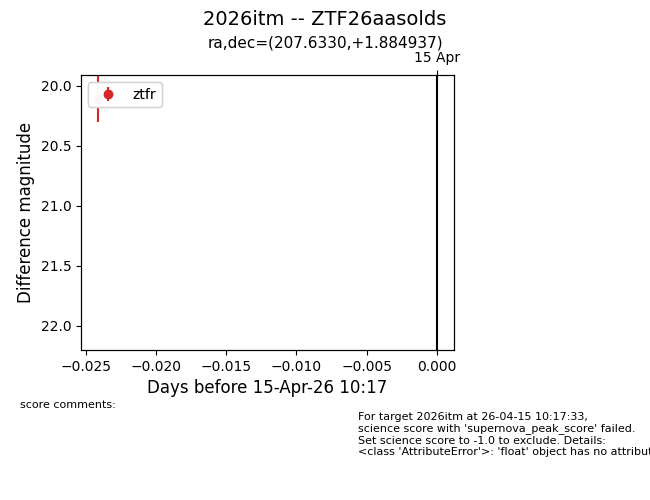
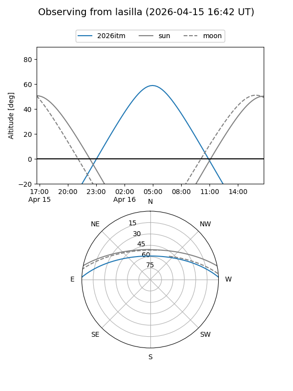
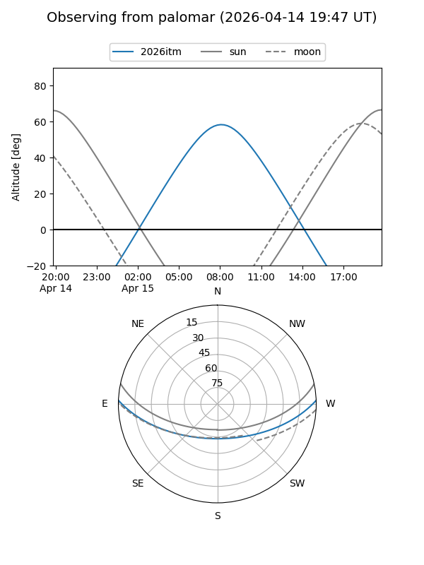
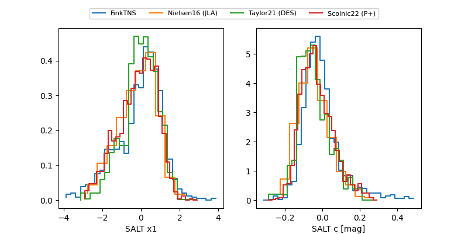

2026itm
Target 2026itm at 2026-04-15 10:30
Aliases and brokers:
FINK: link
Lasair: link
ALeRCE: link
TNS: link
YSE: link
alt names
ZTF26aasolds (ztf,fink_ztf)
2026itm (tns,yse)
Coordinates:
equatorial (ra, dec) = 207.6330,+1.88494
equatorial (HMS+DMS) = 13:50:31.91,+01:53:05.77
galactic (l, b) = (334.7101,+61.05672)
Flags:
Photometry:
last ztfr=20.11
1 ztfr detections
Lightcurve

Visibility


Additional plots
